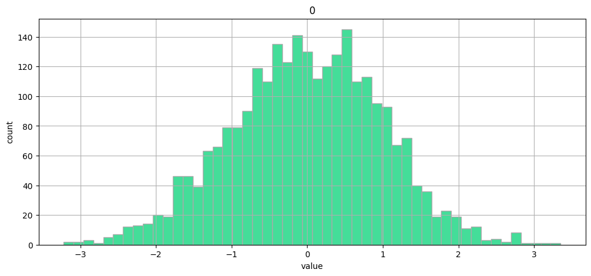
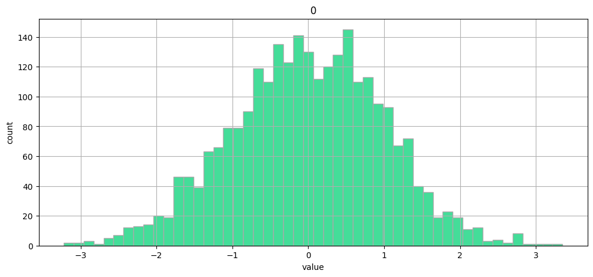

Analyse Univariée
M2 IGAST
Martin Cubaud
LASTIG-UGE-IGN/ENSG
2024-2025
Analyse Univariée
Décrire et mesurer la répartition des valeurs que peut prendre une variable : sa distribution (≈ “histogramme en continu”)
Parfois certaines distributions ressemblent à des distributions bien connues : on parle de lois.
e.g. loi normale/gaussienne, loi de Poisson, géométrique, exponentielle…


Histogramme d'une variable suivant une loi normale $\mathcal{N}(0, 1)$
xx = np.random.normal(size=2600)
plt.figure(figsize=(12, 5))
plt.hist(xx, bins=50, edgecolor="#aaaaaa", color="#44DD99")
plt.xlabel("value")
plt.ylabel("count")
plt.grid(True)
plt.show()xx = pd.DataFrame(np.random.normal(size=2600))
xx.hist(bins=50, figsize=(12, 5), edgecolor="#aaaaaa", color="#44DD99", grid=True)
plt.xlabel("value")
plt.ylabel("count")
plt.show()xx <- data.frame(value=rnorm(2600))
plot1 <- ggplot(xx)+
geom_histogram(aes(x = value),bins = 50, color="#aaaaaa", fill="#44DD99" )+
theme_light()
plot1 


Histogramme d'une distribution
réelle

Données : arbres de la ville de Paris [https://opendata.paris.fr/]
Histogramme d'une distribution
réelle filtrée
Données : arbres de la ville de Paris [https://opendata.paris.fr/]
Analyse univariée : plan
Objectif : Décrire la répartition des valeurs d’une variable
Mesures de tendance centrale
mode, moyenne, médiane
Mesures de dispersion
étendue, écart-type, variance, quantiles, coefficient de variation
Mesures de forme
symétrie (Skewness) et aplatissement (Kurtosis)
Statistique Descriptive
Univariée : la tendance
Moyenne(s), mode, médiane
Moyenne
\(\displaystyle \bar{x} = \frac{1}{n}\sum_{i=0}^{n} x_i\)
Moyenne pondérée
Lorsque les valeurs n'ont pas le même poids
Par exemple : poids = effectif de la valeur dans la population.
\(\displaystyle \bar{x} = \frac{1}{\sum_{i=0}^{n} p_i}\sum_{i=0}^{n} p_i x_i\)
Avantages et inconvénients
de la moyenne
Avantage
Chaque valeur compte
inconvénients
- sensibilité aux valeurs extrêmes
- pas de signification sur les valeurs discrètes (e.g. 2.5 enfants par femme)
- exclure les outliers
- utiliser un autre estimateur
- étudier la distribution des valeurs (e.g. cas bimodal) et opérer une classification
Autres Moyennes
Moyenne géométrique
\(\displaystyle \bar{x} = \sqrt[n]{\prod _{i=0}^{n} x_i}\)
Moins sensible à la présence de valeurs extrêmes
Moyenne quadratique (RMS)
\(\displaystyle \bar{x} = \sqrt{\frac{1}{n}\sum_{i=0}^{n} x_i^2}\)
Cas particulier : Moyenne glissante
Moyenne calculée sur une fenètre de n valeurs consécutives.
e.g. on reçoit une mesure chaque seconde, très bruitée, et on désire afficher 10 minutes de signal lissé dans le temps
→ on calcule pour chaque point du signal, la moyenne sur 10 valeurs consécutives (5 en avant , 5 en arrière)
Le Mode
Mode : valeur la plus fréquente (effectif max.) de la série de valeurs que prend une variable.
⚠ si variable quantitative continue : faire une classification . Dans ce cas, le mode est la moyenne des valeurs min et max des bornes de la classe de plus grand effectif.
Avantages et inconvénients du mode
Avantages
Peu sensible aux valeurs extrêmes (moins sensible que la moyenne)
Signification concrète : la situation la plus fréquente
inconvénients
Ne dépends pas de toutes les observations : la modification d’une seule valeur n’entraîne pas une modification du mode
La Médiane
Médiane : valeur qui partage une série de valeurs en deux sous-ensembles d'égal effectif.
Comme en géométrie, la médiane est la valeur de la variable qui est la plus proche de toutes les autres.
étapes de calcul
Ordonner les valeurs selon un ordre croissant.
Calculer le rang $i=\frac{n+1}{2}$.
Si n impair, la valeur médiane existe dans la série statistique.
Si n pair, la valeur médiane est entre deux valeurs, et est égale à la moyenne de ces 2 valeurs.
Avantages et inconvénients
de la médiane
Avantages
Souvent plus pertinente que la moyenne
Peu sensible aux valeurs extrêmes (moins sensible que la moyenne)
Signification concrète : divise en deux la distribution : un individu sur deux a une valeur inférieure ou supérieure à celle-ci
inconvénients
Ne dépends pas de toutes les observations : la modification d’une seule valeur n’entraîne pas une modification de la médiane
Quelle mesure choisir ?
Tout dépend de la distribution !
→ Toujours afficher l"histogramme ou la distribution de densité !
Le Mode est privilégié pour les valeurs nominales et si on désire consider "le cas le plus fréquent".
Distribution sans longue traîne ?
→ moyenne et médiane
Plusieurs modes dans la distribution ?
→ classification puis médiane / moyenne par classe
Distribution bimodale
Que choisir : moyenne ou médiane ?
Distribution unimodale symétrique
from scipy.stats import gaussian_kde
xx = np.random.normal(loc=5, scale=1, size=2900)
density = gaussian_kde(xx) #kernel density estimator
x = np.linspace(min(xx), max(xx), 100)
y = density(x) #On estime la densité entre pour 100 valeurs entre xx_min et xx_max
plt.figure(figsize=(12, 5))
plt.plot(x, y, color="#44DD99", lw=1.3)
plt.axvline(x=np.mean(xx), color="red")
plt.axvline(x=np.median(xx) + 0.02, color="blue")
plt.text(4.5, 0.2, "mean", color="red")
plt.text(5.5, 0.2, "median", color="blue")
plt.xlabel("value")
plt.ylabel("density")
plt.grid(True)
plt.show()xx = pd.Series(np.random.normal(loc=5, scale=1, size=2900))
ax = xx.plot(
kind="density", ind=np.linspace(min(xx), max(xx), 100),
figsize=(12, 5), color="#44DD99", lw=1.3, grid=True,
xlabel="value", ylabel="density")
ax.axvline(x=xx.mean(), color="red")
ax.axvline(x=xx.median() + 0.02, color="blue")
ax.text(4.5, 0.2, "mean", color="red")
ax.text(5.5, 0.2, "median", color="blue")
ax.set_xlabel("value")xx <- data.frame(value=rnorm(2900,mean = 5, sd = 1))
plot1 <- ggplot(xx)+
geom_line(aes(x = value),stat = "density", color="#44DD99", lwd= 1.3)+
geom_vline(xintercept = mean(xx$value), color="red")+
geom_vline(xintercept = median(xx$value) + 0.02,color="blue")+
annotate("text", x=c(4.5,5.5), y=c(0.2,0.2), colour=c("red","blue"),label=c("mean", "median"))+
theme_light()
plot1
Histogramme et distribution
Histogramme pour un vecteur numérique :
plt.figure(figsize=(12, 3))
x = np.random.geometric(p=0.5, size=2500) #eg: Combien de fois lancer une pièce avant de tomber sur face
plt.hist(x, bins=10)
plt.title("Histogram of x")
plt.xlabel("x")
plt.ylabel("Frequency")
plt.show()
Histogramme et distribution
Un histogramme n’a pas de sens pour une variable qualitative.
On peut utiliser plt.bar, ⚠ mais ce n’est plus une distribution !
colors = sorted(["blue", "yellow", "red", "green", "purple", "orange", "black"])
samples = np.random.choice(colors, size=2500, replace=True)#['black', 'red', 'orange', ..., 'purple', 'green', 'purple']
plt.figure(figsize=(12, 3))
plt.bar(colors, np.unique(samples, return_counts=True)[1], color=colors)
plt.show()Statistique Descriptive
Univariée : la dispersion
Variance, écart-type, Coeff. de variation.
La dispersion statistique
xy = np.random.normal(size=(900, 900))
plt.figure(figsize=(5, 5))
plt.scatter(xy[:, 0], xy[:, 1], s=21, color="#44DD99", edgecolor="#666666")
plt.xlabel("X")
plt.ylabel("Y")
plt.grid(True)
plt.axis("equal")
plt.show()xy = pd.DataFrame(np.random.normal(size=(900, 900)))
xy.plot(kind="scatter", x=0, y=1, s=[21], color="#44DD99", edgecolor="#666666", figsize=(5, 5), grid=True)
plt.xlabel("X")
plt.ylabel("Y")
plt.axis("equal")
plt.show()mydataset <- data.frame(X=rnorm(900), Y=rnorm(900))
plot1 <- ggplot(mydataset)+
geom_point(aes(x=X, y=Y), fill="#44DD99", color="#666666", shape=21)+
coord_equal()+theme_light()
plot1

Variance et écart-type
La variance est la somme des écarts carrés à la moyenne rapporté à l’effectif.
\(\displaystyle var_x = \frac{1}{n}\sum_{i=0}^{n} (x_i -\bar{x})^2\)
Avec $X$ une variable, $x_i$ les valeurs de la variable, $\bar{x}$ la moyenne de $X$, et $n$ l'effectif.
$\sigma_x = \sqrt{var_x}$ : l'écart type est la racine carrée de la variance.
Même moyenne et variances différentes

Variance et écart-type
Variance et écart-type rendent compte de la dispersion de la variable autour de sa moyenne.
Ils sont sensibles aux valeurs extrêmes et toujours positifs.
Si $var_X=0$ ou $\sigma_x=0$ , alors X est constante.
Un écart-type faible indique que les valeurs sont réparties de façon homogène autour de la moyenne.
Lorsque $X \sim \mathcal{N}(\mu, \sigma)$
$[\mu - \sigma ; \mu+\sigma] \approx \frac{2}{3}$ de l'effectif.
$[\mu - 2\sigma ; \mu+2\sigma] \approx 95\%$ de l'effectif.
$[\mu - 3\sigma ; \mu+3\sigma] \approx 99\%$ de l'effectif.
Quantiles
La médiane sépare une population en deux classes d'égal effectif selon la valeur d'une variable (quantitative).
Les quantiles séparent une population en n classes d'égal effectif.
Les quartiles d'une population selon une variable $X$ sont trois valeurs $Q_1, Q_2, Q_3$,qui séparent une population en quatres classes d'égal effectif.
- 25% des valeurs de \(X\) sont strictement inférieures à $Q_1$
- 50% des valeurs de \(X\) sont strictement inférieures à $Q_2$ (médiane)
- 75% des valeurs de \(X\) sont strictement inférieures à $Q_3$
De même, déciles et centiles.
écarts inter-quartiles et inter-déciles
Deux mesures de la dispersion d’une distribution :
Écart inter-quartile: $Q_3-Q_1$, capture 50% des valeurs de la population les plus proches de la médiane.
Écart inter-décile: $Q_9-Q_1$, capture 80% des valeurs de la population les plus proches de la médiane.
Les boîtes à moustaches (boxplots)
Représentation courante de la dispersion d’une variable à l’aide de quartiles
- La marque centrale de la boîte est la médiane
- Les bords de la boîte sont les quartiles $Q_1$ et $Q_3$
- Les extrémités des moustaches vont jusqu’à la plus grande (resp. la plus petite ) valeur inférieure (resp. supérieure) à 1.5 fois l’écart interquartile
- Les valeurs qui dépassent les moustaches sont affichées sous formes de points.
Les boîtes à moustaches (boxplots)
from sklearn.datasets import load_iris
iris = load_iris()
df = pd.DataFrame(iris.data, columns=iris.feature_names)
df['Species'] = iris.target_names[iris.target]
df.boxplot(by='Species', column='sepal width (cm)', vert=False, figsize=(9, 5))
plt.show()from sklearn.datasets import load_iris
iris = load_iris()
#We create a list by species of sepal widths.
x = [iris.data[iris.target==i, 1] for i in np.unique(iris.target)]
plt.figure(figsize=(9, 5))
plt.boxplot(x, labels=iris.target_names, vert=False)
plt.grid()
plt.xlabel("sepal width (cm)")
plt.ylabel("Species")
plt.show()plot1 <- ggplot(iris)+
geom_boxplot(aes(y=Sepal.Width,x= Species) ) + coord_flip()
plot1
Avantages et inconvénients
des quantiles
Avantages
Peu sensibles aux distributions aplaties et aux valeurs extrêmes
L’écart inter-quantile est plus robuste que l’écart-type
inconvénients
Parfois délicat pour les variables quantitatives discrètes
Les écarts inter-quantiles négligent l’influence des valeurs extrêmes sur la distribution
Le coefficient de variation
Le coefficient de variation (CV) est une autre mesure de dispersion.
C'est le ratio entre l'écart-type $\sigma_x$ et la moyenne $\bar{x}$ d'une variable quantitative X.
$CV(X)=\frac{\sigma_x}{\bar{x}}$
Plus il est important, plus la dispersion est grande.
Plus il est proche de 0, plus les données sont homogènes.
Il souffre des mêmes inconvénients que la moyenne et l'écart-type : sensibilité aux valeurs extrêmes.
Comparaison de dispersion de deux distributions de valeurs
Exemple : deux communes versent des aides aux entreprises locales.
Commune A : moyenne = 390€, $\sigma$ = 30€
Commune B : moyenne = 152€, $\sigma$ = 8€
Pour quelle commune les aides sont les plus homogènes ?
On pourrait aussi comparer des distribution de valeurs exprimées dans des unités différentes !
(Mauvaise) Comparaison visuelle de deux distributions
A = np.random.normal(size=10000, loc=390, scale=30)
B = np.random.normal(size=10000, loc=152, scale=8)
plt.figure(figsize=(20, 3))
ax = plt.subplot(1, 2, 1)
plt.hist(A, bins=10, color="white", edgecolor="black", density=True)
ax.set_xlabel("A")
ax.set_ylabel("Density")
ax.set_title("Histogram of A")
ax = plt.subplot(1, 2, 2)
plt.hist(B, bins=10, color="white", edgecolor="black", density=True)
ax.set_xlabel("B")
ax.set_ylabel("Density")
ax.set_title("Histogram of B")
plt.show()A <- rnorm(n = 10000, mean = 390, sd = 30)
B <- rnorm(n = 10000, mean = 152, sd = 8)
par(mfrow=c(1, 2)) #2 graphes en colonnes
hist(A, probability = T)
lines(density(A), col="red")
hist(B, probability = T)
lines(density(B), col="red")
Qu'est-ce qui ne vas pas ?
Comparaison visuelle de deux distributions
Il faut une échelle commune !
A = np.random.normal(size=10000, loc=390, scale=30)
B = np.random.normal(size=10000, loc=152, scale=8)
plt.figure(figsize=(20, 3))
ax1 = plt.subplot(1, 2, 1)
plt.hist(A, bins=10, color="white", edgecolor="black", density=True)
ax1.set_xlabel("A")
ax1.set_ylabel("Density")
ax1.set_title("Histogram of A")
ax2 = plt.subplot(1, 2, 2, sharex=ax1, sharey=ax2)
plt.hist(B, bins=10, color="white", edgecolor="black", density=True)
ax.set_xlabel("B")
ax.set_ylabel("Density")
ax.set_title("Histogram of B")
plt.show()A <- rnorm(n = 10000, mean = 390, sd = 30)
B <- rnorm(n = 10000, mean = 152, sd = 8)
par(mfrow=c(1, 2))
hist(A, probability = T, xlim = c(50,600), ylim = c(0,0.05))
lines(density(A), col="red")
hist(B, probability = T,xlim = c(50,600), ylim = c(0,0.05))
lines(density(B), col="red")
Statistique Descriptive
Univariée : la forme
Symétrie, applatissement
Asymétrie des distributions
Les coefficients de Pearson
Deux moyens simples d'estimer l'asymétrie
$C_1 = \frac{\bar{x} - mode(X)}{\sigma_x}$
$C_2 = \frac{3(\bar{x} - mediane(X))}{\sigma_x}$
Interprétation des coefficients d’asymétrie
- Si le coefficient est nul, la distribution est symétrique.
- Si le coefficient est négatif, la distribution est déformée à gauche de la médiane (sur-représentation de valeurs faibles, à gauche)
- Si le coefficient est positif, la distribution est déformée à droite de la médiane (sur-représentation de valeurs fortes, à droite)
Le coefficient de Fischer
Ce coefficient est le moment d’ordre 3 de la variable $X$ ( de moyenne $\mu$ et d’écart-type $\sigma$) centrée réduite
$skewness = \mathbb{E} \left[ \left( \frac{X - \mu}{\sigma} \right)^3 \right] = \frac{\Sigma_{i=0}^n(x_i - \bar{x})^3}{n\sigma^3}$
L'applatissement des distributions (Kurtosis)
Courbe piquée: Peu de variation, distribution relativement homogène, beaucoup de valeurs égales ou proches de la moyenne.
Courbe applatie: Variations importantes, distribution relativement hétérogène, beaucoup de valeurs s’éloignent de la moyenne.
Coefficient d'applatissement : Kurtosis
Coefficient non normalisé :
$K=\frac{\Sigma_{i=0}^n(x_i - \bar{x})^4}{n\sigma^4}$
Si la distribution est normale, $K=3$
Si $K>3$, la distribution est plus applatie.
Si $K<3$, la distribution est moins applatie.
On normalise parfois en considérant $K′=K−3$ (excès d’applatissement)
Représentation d’une distribution et Échelle de couleurs
Distribution et Échelle de couleurs
Pour une variable quantitative continue qu’on souhaite colorer, il n’est pas toujours possible de graduer une échelle de couleur continue.
Il faut (souvent) classer les valeurs en catégories. Le nombre de classes et les méthodes de classification varient.
En général : 5, 7 ou 9 classes
- < 5 trop peu de détails
- > 9 difficile de distinguer les classes proches
Distribution et Échelle de couleurs
Méthodes de classifications de Qgis
- Ruptures Naturelles (Jenks) : Minimisation des variances intra-classe et maximisation des variances inter-classe
- Effectifs égaux (quantiles)
- Intervalles égaux
- Ecart-type : intervales de 1 ou 0.5 σ
- Jolies ruptures : intervalle égaux “décalés” pour faire joli : nombre ronds, puissances de 10…
Exemple avec la surface des quartiers de Paris
import geopandas as gpd
quartier = gpd.read_file("quartier_paris.shp")
quartier.plot(figsize=(15, 5), edgecolor="black")quartiers <- st_read("quartier_paris.shp")
plot(quartiers$geometry)
Allure de la distribution
quartier["surface"].plot(kind="hist", bins=15, xlabel="surface [m²]", ylabel="count", figsize=(15, 5), title="Histogram of surface")hist(quartiers$surface,breaks = 15)
Affichage par défaut :
quartier.plot(column="surface", legend=True, figsize=(15, 5), edgecolor="black").set_title("Surface")par(mar=c(0,0,0,0))
plot(quartiers["surface"])
Par défaut la fonction plot de sf utilise la méthode “pretty” avec 10 ruptures (9±1 classes) => ce sont des intervalles égaux.
Par défaut la fonction plot de géopandas utilise une échelle continue.
Jenks à 5 , 7 et 9 classes


Jenks à 5 , 7 et 9 classes
Code R correspondant :
Code Python correspondant :
import mapclassify
quartier.plot(column="surface", scheme="naturalbreaks", k=5, legend=True, legend_kwds={"title": "Surface", "loc": (1.01, 0), "fmt": "{:.1e}"}, figsize=(15, 3), edgecolor="black").set_title("Jenks (5)")
quartier.plot(column="surface", scheme="naturalbreaks", k=7, legend=True, legend_kwds={"title": "Surface", "loc": (1.01, 0), "fmt": "{:.1e}"}, figsize=(15, 3), edgecolor="black").set_title("Jenks (7)")
quartier.plot(column="surface", scheme="naturalbreaks", k=9, legend=True, legend_kwds={"title": "Surface", "loc": (1.01, 0), "fmt": "{:.1e}"}, figsize=(15, 3), edgecolor="black").set_title("Jenks (9)")par(mar=c(0,0,0,0))
plot(quartiers["surface"], breaks="jenks", nbreaks = 5, main = "5 breaks")
plot(quartiers["surface"], breaks="jenks", nbreaks = 7, main="7 breaks")
plot(quartiers["surface"], breaks="jenks", nbreaks = 9, main= "9 breaks")Effectifs égaux (quantiles)
ax = quartier.plot(column="surface", scheme="quantiles", k=5, legend=True, legend_kwds={"title": "Surface", "loc": (1.01, 0), "fmt": "{:.1e}"}, figsize=(15, 5), edgecolor="black")
ax.set_title("Effectifs égaux")Intervalles égaux (7)
quartier.plot(column="surface", scheme="equal_interval", k=7, legend=True, legend_kwds={"title": "Surface", "loc": (1.01, 0), "fmt": "{:.2e}"}, figsize=(15, 5), edgecolor="black").set_title("Intervalles égaux (7)")par(mar=c(0,0,0,0))
plot(quartiers["surface"], breaks="equal", nbreaks = 7, main = "Intervalles égaux")écart-types
quartier.plot(column="surface", scheme="stdmean", classification_kwds={"anchor":True}, legend=True, legend_kwds={"title": "Surface", "loc": (1.01, 0), "fmt": "{:.1e}"}, figsize=(15, 5), edgecolor="black").set_title("écart-types")par(mar=c(0,0,0,0))
plot(quartiers["surface"], breaks="sd",main = "Écart-type")
≈méthode des jolies ruptures sur variable centrée réduite
Guides de choix de la méthode de classification
Pour les classification manuelles :
- Les classes doivent contenir toutes les valeurs, être sans recouvrement, contigües et distinctes.
- Procéder par essai-erreur
- Attention aux décimales et aux extrémités
- Si distribution uniforme → Intervalles égaux
- Si distribution asymétrique → Effectifs égaux, Jenks , progression géométrique (rare).
- Si distribution symétrique → Écart-type, intervalle égaux
Autres classification
Consultez la doc de la fonction classInt du package du même nom
Consultez la doc du package mapclassify.
Transformations des données
⚠ D'abord effectuer une transformation linéaire pour ajuster le domaine de la variable afin que la transformation suivante soit définie et injective, = elle associe des valeurs distinctes à des résultats distincts
- $x \mapsto log(x)$ pour une distribution asymétrique à droite ou
$x \mapsto \sqrt{x}$ si moins asymétrique. - $x \mapsto x^2$ pour une distribution asymétrique à gauche ou
$x \mapsto x^3$ si très asymétrique
(⚠ toujours vérifier l'allure de la distribution transformée)
Variables centrées-réduites
⚠ En principe, uniquement lorsque la distribution d’une variable est proche d’une gaussienne ⚠
Centrer : soustraire la moyenne.
Réduire : diviser par l'écart-type
Une variable centrée réduite est exprimée en «écarts-types à la moyenne»
→ permet de repérer les valeurs extrèmes (<-2σ ou >2σ)
→ utile pour comparer des individus selon un grand nombre de variables (tableaux de synthèse)
Visualiser une distribution
- Histogramme
- Distribution
- BoxPlot
- Violin plot
- Pyramides (histogrammes juxtaposés)
- Polygones de fréquences
- Distribution cumulée, Fonction de répartition, CDF
- Dot strip plot
Histogramme
from palmerpenguins import load_penguins
penguins = load_penguins()
penguins["body_mass_g"].dropna().plot(
kind="hist", bins=50, xlabel="body mass [g]", ylabel="count",
figsize=(15, 5), title="Penguins body mass\nhistogram", edgecolor="darkgray", color="darkorchid"
)library(palmerpenguins)
data(package = 'palmerpenguins')
mydata <- penguins
histo_mass <- ggplot(mydata)+
geom_histogram(aes(x=body_mass_g), fill="darkorchid4", color="darkgray", bins=50)+
labs(title = "Penguins Body Mass", subtitle = "Histogram")+
ylab("Count")+theme_light()
histo_mass
Distribution
⚠ ce n'est pas une probabilité, mais une densité de probabilité. Pour obtenir la probabilité, utiliser la formule $\mathbb{P}(a\leqslant X\leqslant b) = \int_a^b f(t)\,\mathrm{d}t$
ax = penguins["body_mass_g"].dropna().plot(
kind="density", ylabel="count",
figsize=(15, 5), title="Penguins body mass\nProbability density and mean", color="darkorchid"
)
ax.axvline(x=penguins["body_mass_g"].dropna().mean(), color="black", linestyle="--")
ax.set_xlabel("body mass [g]")library(palmerpenguins)
data(package = 'palmerpenguins')
mydata <- penguins
distrib_mass <- ggplot(mydata)+
geom_density(aes(x=body_mass_g), fill="darkorchid4", color="darkgray")+
geom_vline(aes(xintercept=mean(body_mass_g, na.rm = T)), color="black", size=0.4, linetype="dashed" )+
labs(title = "Penguins Body Mass", subtitle = "Probability density and mean")+
ylab("Count")+theme_light()
distrib_mass
Boxplot
penguins.boxplot(column="body_mass_g", by="species", vert=False, figsize=(15, 5)).set_xlabel("body mass [g]")library(palmerpenguins)
data(package = 'palmerpenguins')
mydata <- penguins
boxplot_mass <- ggplot(mydata)+
geom_boxplot(aes(x=body_mass_g, y=species, color=species))+
labs(title = "Penguins Body Mass", subtitle = "BoxPlot by Species")+
ylab("Count")+theme_light()
boxplot_mass
Violin Plot
Distribution + miroir. Utile pour des distributions complexes, mal résumées par la moyenne et la dispersion.
list_species = penguins["species"].unique()
plt.figure(figsize=(15, 5))
plt.violinplot(
[penguins[penguins["species"]==species]["body_mass_g"].dropna() for species in list_species],
)
plt.xticks(range(1, len(list_species)+1), list_species)
plt.xlabel("species", fontweight='bold')
plt.ylabel("body mass [g]")
plt.title("Penguins body mass\nviolin plot")library(palmerpenguins)
data(package = 'palmerpenguins')
mydata <- penguins
violin_mass <- ggplot(mydata)+
geom_violin(aes(y=body_mass_g, x=species, fill=species), color="gray", trim=F)+
labs(title = "Penguins Body Mass", subtitle = "ViolinPlot by Species")+
ylab("Count")+theme_light()
violin_mass
Violin Plot et boxplot
list_species = penguins["species"].unique()
plt.figure(figsize=(15, 5))
mass_groupby_species = [penguins[penguins["species"]==species]["body_mass_g"].dropna() for species in list_species]
plt.violinplot(mass_groupby_species, showextrema=False)
plt.boxplot(mass_groupby_species, widths=0.1)
plt.xticks(range(1, len(list_species)+1), list_species)
plt.xlabel("species", fontweight='bold')
plt.ylabel("body mass [g]")
plt.title("Penguins body mass\nviolin plot and boxplot")library(palmerpenguins)
data(package = 'palmerpenguins')
mydata <- penguins
violin_mass <- ggplot(mydata)+
geom_violin(aes(y=body_mass_g, x=species, fill=species), color="lightgray", trim=F)+
geom_boxplot(aes(y=body_mass_g, x=species, fill=species), color="black", fill="#eeeeee" ,width=0.1)+
labs(title = "Penguins Body Mass", subtitle = "ViolinPlot and Boxplot by Species")+
ylab("Count")+theme_light()
violin_masss
Pyramides (histogrammes juxtaposés)
Lorsqu'une des variables est qualitative à deux modalités :
female_data = penguins[penguins['sex'] == 'female']
male_data = penguins[penguins['sex'] == 'male']
female_count = np.histogram(female_data['body_mass_g'], bins=bins)[0]
male_count = np.histogram(male_data['body_mass_g'], bins=bins)[0]
bins = np.linspace(min(penguins['body_mass_g']), max(penguins['body_mass_g']), 50)
plt.barh(bins[:-1], male_count, height=np.diff(bins)[0], label='Male', edgecolor="grey")
plt.barh(bins[:-1], -female_count, height=np.diff(bins)[0], label='Female', edgecolor="grey")
ticks = np.arange(-max(female_count), max(male_count), 2)
plt.xticks(ticks=ticks, labels=np.abs(ticks))
plt.axvline(x=0, color='black'); plt.xlabel('Count'); plt.ylabel('Body Mass [g]')
plt.title('Penguins Body Mass\nPyramid Plot by Sex')
plt.legend()library(palmerpenguins)
data(package = 'palmerpenguins')
mydata <- penguins
pyramide_mass <- ggplot(mydata, aes(fill = sex)) +
geom_bar(data = subset(mydata, sex == "female"), stat = "bin", aes(x=body_mass_g, y=..count..*(-1)), color="grey") +
geom_bar(data = subset(mydata, sex == "male"), stat = "bin", aes(x=body_mass_g), color="grey") +
scale_y_continuous(labels = paste0(as.character(c(seq(20, 0, -10), seq(10, 20, 10))))) +
ylab("count")+ coord_flip()+
labs(title = "Penguins Body Mass", subtitle = "Pyramid Plot by sex")+
theme_light()
pyramide_mass
Polygones de fréquences
“Histogramme en courbe”
Utile pour comparer plusieurs distributions
bins = np.linspace(min(penguins['body_mass_g']), max(penguins['body_mass_g']), 50)
plt.figure(figsize=(15, 5))
for species in penguins["species"].unique():
hist = np.histogram(penguins[penguins["species"] == species]["body_mass_g"], bins=bins)[0]
plt.plot(bins[:-1]+np.diff(bins)/2, hist, label=species)
plt.legend(title="species")
plt.xlabel("body mass [g]")
plt.ylabel("count")
plt.grid(alpha=0.5)
plt.title("Penguins body mass\nFrequency polygons")library(palmerpenguins)
data(package = 'palmerpenguins')
mydata <- penguins
freqpoly_mass <- ggplot(mydata)+
geom_freqpoly(aes(x=body_mass_g, color=species), bins=50)+
labs(title = "Penguins Body Mass", subtitle = "Frequence Polygons")+
ylab("Count")+theme_light()
freqpoly_massDistribution cumulée, Fonction de répartition, CDF
Courbe $x, y$,
en $x$ la valeur de la variable $V$, en $y$ la probabilité empirique d'avoir dans la population un individu pour lequel $V \leqslant x$
i.e. c'est la fonction :
$F_V(x) = \mathbb{P}(V\leqslant x)$

Distribution cumulée, Fonction de répartition, CDF
Permet de superposer les CDF de sous groupes de la population. Ici : les espèces des manchots.

Distribution cumulée simple
plt.figure(figsize=(15, 5))
ax=plt.subplot()
plt.xlim((penguins["body_mass_g"].min(), penguins["body_mass_g"].max()))
penguins.plot(kind="hist", ax=ax, column="body_mass_g", density=True, histtype="step", cumulative=True, bins=len(penguins),
title="Penguins Body Mass\nCumulative Distribution Function", ylabel="Probability", legend=False)
ax.set_xlabel("body mass [g]")
plt.grid(alpha=0.5)library(palmerpenguins)
data(package = 'palmerpenguins')
mydata <- penguins
plot_mass <- ggplot(mydata)+
stat_ecdf(aes(x= body_mass_g),color="darkorchid4")+
labs(title = "Penguins Body Mass", subtitle = "Cumulative Distribution Function")+
ylab("Probability")+theme_light()
plot_mass

Distribution cumulée par groupe
plt.figure(figsize=(15, 5))
for species in penguins["species"].unique():
plt.ecdf(penguins[penguins["species"] == species]["body_mass_g"], label=species)
plt.legend(title="species")
plt.xlabel("body mass [g]")
plt.ylabel("count")
plt.title("Penguins Body Mass\nCumulative Distribution Function")
plt.grid(alpha=0.5)def ecdf(x, vmin, vmax,**kwargs):
x = np.asarray(x)
argsort = np.argsort(x)
x = x[argsort]
cum_weights = (1 + np.arange(len(x))) / len(x)
line, = plt.plot([vmin, x[0], *x, vmax], [0, 0, *cum_weights, 1],
drawstyle="steps-post", **kwargs)
return line
plt.figure(figsize=(15, 5))
vmin = penguins["body_mass_g"].min()
vmax = penguins["body_mass_g"].max()
for species in penguins["species"].unique():
ecdf(penguins[penguins["species"] == species]["body_mass_g"], vmin=vmin, vmax=vmax, label=species)
plt.legend(title="species")
plt.xlabel("body mass [g]")
plt.ylabel("count")
plt.title("Penguins Body Mass\nCumulative Distribution Function")
plt.grid(alpha=0.5)library(palmerpenguins)
data(package = 'palmerpenguins')
mydata <- penguins
plot_mass <- ggplot(mydata)+
stat_ecdf(aes(x= body_mass_g,color=species))+ #on affecte la couleur à la variable modale
labs(title = "Penguins Body Mass", subtitle = "Cumulative Distribution Function")+
ylab("Probability")+theme_light()
plot_mass

Bonus
Fat-tail distributions
Les distributions très asymétriques et très étendues sont délicates à résumer.
Les indicateurs traditionnels sont plus efficaces lorsque la variabilité des valeurs est moindre, et leur distribution plus symétrique.
e.g. Considérer la population moyenne des villes de France a-t’elle du sens ? 
Distribution rang-taille des villes de france
Pour mieux voir la distribution et les écarts, on trace la taille des villes en fonction de leur rang

Distribution rang-log(taille)